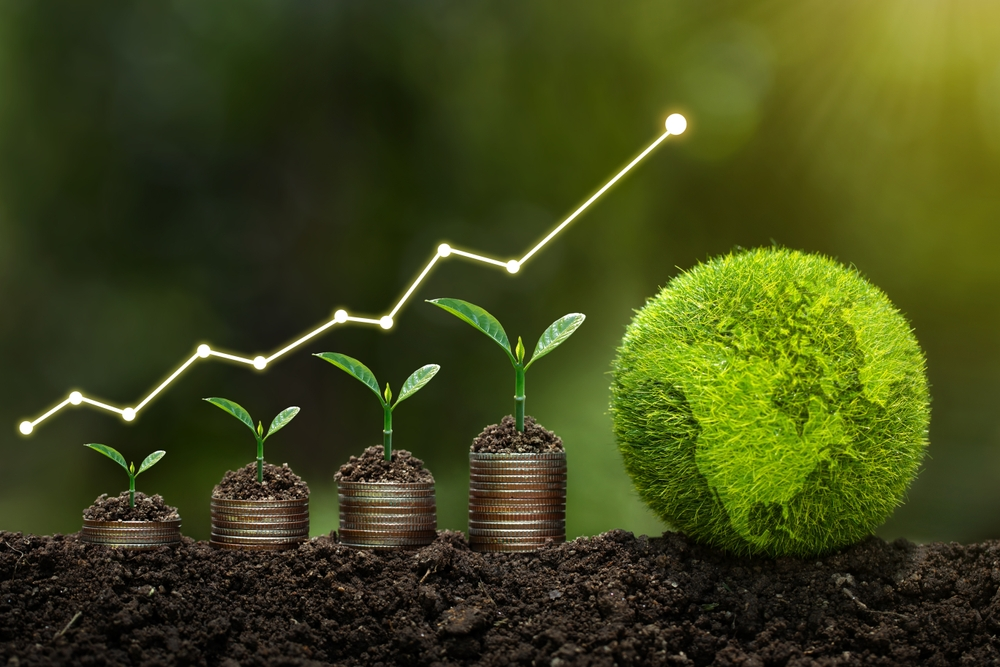
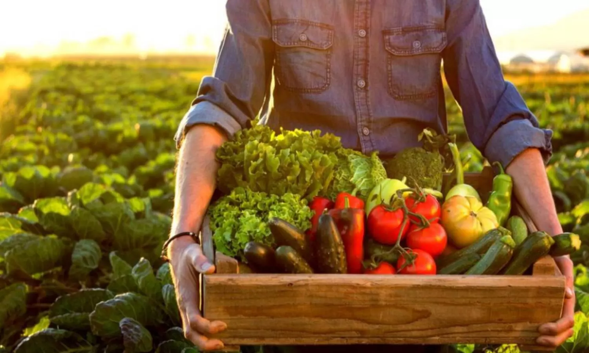
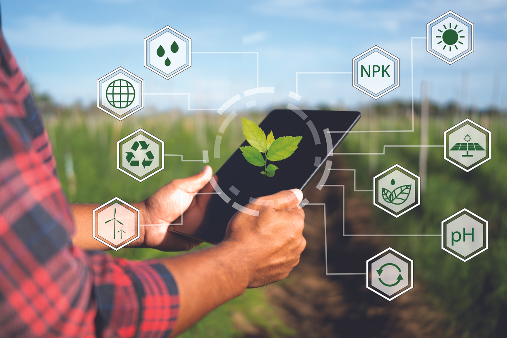

História da Agricultura
A agricultura começou há milênios, quando sociedades abandonaram a caça e coleta para cultivar plantas e domesticar animais. A Revolução Neolítica introduziu a agricultura sistemática, enquanto a Revolução Verde, no século XX, trouxe inovações como fertilizantes e sementes melhoradas, aumentando significativamente a produção de alimentos e transformando a agricultura global.
Contribuição Econômica
A agricultura é um pilar essencial da economia global, fornecendo alimentos e matérias-primas vitais. Emprega milhões de pessoas, desde trabalhadores agrícolas até cientistas e engenheiros. Em muitos países em desenvolvimento, o setor agrícola é uma parte crucial do PIB e da economia local, influenciando o crescimento econômico e o desenvolvimento social.
Segurança Alimentar
A agricultura é a base da segurança alimentar, assegurando o abastecimento de alimentos para a população mundial. No entanto, desafios como a fome e a desnutrição persistem devido a fatores como desigualdade na distribuição de alimentos e . Políticas públicas e programas internacionais são fundamentais para enfrentar esses desafios e garantir que todos tenham acesso a alimentos suficientes e nutritivos.
Sustentabilidade e Meio Ambiente
A adoção de práticas agrícolas sustentáveis, como a agricultura orgânica e a agrofloresta, é essencial para proteger os recursos naturais e a biodiversidade. A agricultura pode causar impactos negativos, como desmatamento e poluição, mas práticas como a gestão integrada de recursos e técnicas de cultivo sustentável podem reduzir esses efeitos e promover a saúde ambiental a longo prazo.
Tecnologia e Inovação
Tecnologias avançadas, como drones e sensores, permitem uma gestão mais precisa das culturas, otimizando o uso de água e nutrientes e aumentando a produtividade. A biotecnologia e a engenharia genética possibilitam o desenvolvimento de plantas e animais com características aprimoradas, como resistência a pragas e maior valor nutritivo, transformando o setor agrícola com soluções inovadoras.
